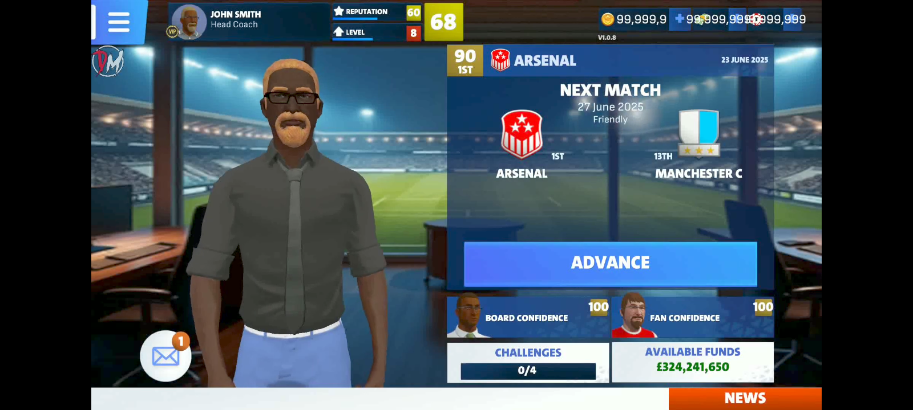
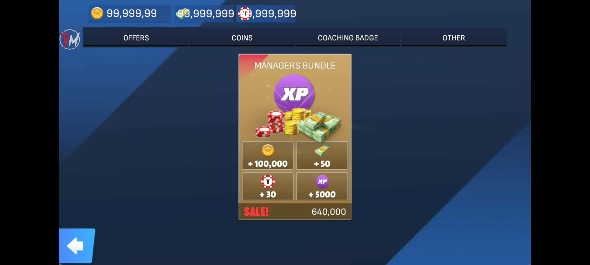

What Is FTM 26?
First Team Manager 2026 (often abbreviated FTM26) is a football management game developed for Android devices. In the game, players take charge of a football club’s strategy, transfers, training, and match tactics — much like a real-world manager. The simulation aims to balance realism with mobile-friendly controls and visuals.
ApkBomb
What Does the FTM 26 Mod Offer?
The FTM 26 mod versions (MOD APKs) are modified builds of the official game that give players advantages or unlock content that would normally require time or in-app purchases. Popular features in FTM 26 mods include:
Oyunclubnet +1
Unlimited Currency: Players get unlimited money, gold, or in-game currency to spend freely on transfers, training, and upgrades.
Oyunclubnet
VIP Unlocked: Premium or VIP features that would usually require purchase are unlocked by default.
Panda Helper
License Unlocked: Some mods unlock licenses for clubs or teams that may be restricted in the base game.
Oyunclubnet
Improved Control: Some modded builds offer control tweaks, making it easier to test strategies or bypass slower progression systems.
Moddroid

These modifications help players skip the grind and jump straight into advanced management and tactical decisions. However, it’s important to note that using modded versions can pose security risks and often violates the terms of service of the original game.
Moddroid
Gameplay and Features
Whether you’re playing the standard version or a mod, the core experience of FTM26 focuses on deep team management:
Real Clubs & Leagues: Choose from many licensed teams around the world — from powerhouse clubs to smaller underdogs.
playmods.net
Tactical Strategy: Build formations, design tactics, and react in real time to the action on the pitch.
Moddroid
Match Simulation: Matches are played out with highlights and stats, giving you feedback on your tactical choices. playmods.net
 The game blends strategic decision-making with football simulation elements to create a compelling management experience on mobile devices. playmods.net
Why Players Use Mods
The modded versions of FTM 26 are popular for several reasons:
Bypass Time Gates: Instead of waiting to build finances or unlock features, players can jump straight into high-level decisions. Moddroid
Enhanced Enjoyment: Players who want a more arcade-style, less grind-intensive experience often prefer modded versions. Moddroid
Experimentation: Mods let players experiment with tactics or teams without worrying about losing matches due to lack of resources. Oyunclubnet
However, it’s worth reminding that mods aren’t official releases and may expose your device to security risks or instabilities. Always weigh pros and cons before installing modded content. Moddroid
Is FTM 26 Mod Safe?
Because mods are distributed outside official app stores, they do not come with the same safety guarantees. Installing APKs from unknown sources can risk malware, account issues, or device vulnerabilities. For players concerned about safety and fair play, using the official version from the Google Play Store or official channels is generally recommended. Moddroid
Final Thoughts
FTM 26 Mod gives football management fans an exciting twist on First Team Manager 2026 by unlocking premium features and fast-tracking progression. While it offers a fun and unrestricted way to build your managerial legacy, players should be mindful of security and legal issues surrounding modded apps. Whether you’re chasing glory with a top club or rising from lower leagues to become a legend, FTM 26 — with or without mods — delivers a deep and satisfying soccer management journey on smartphones. Oyunclubnet